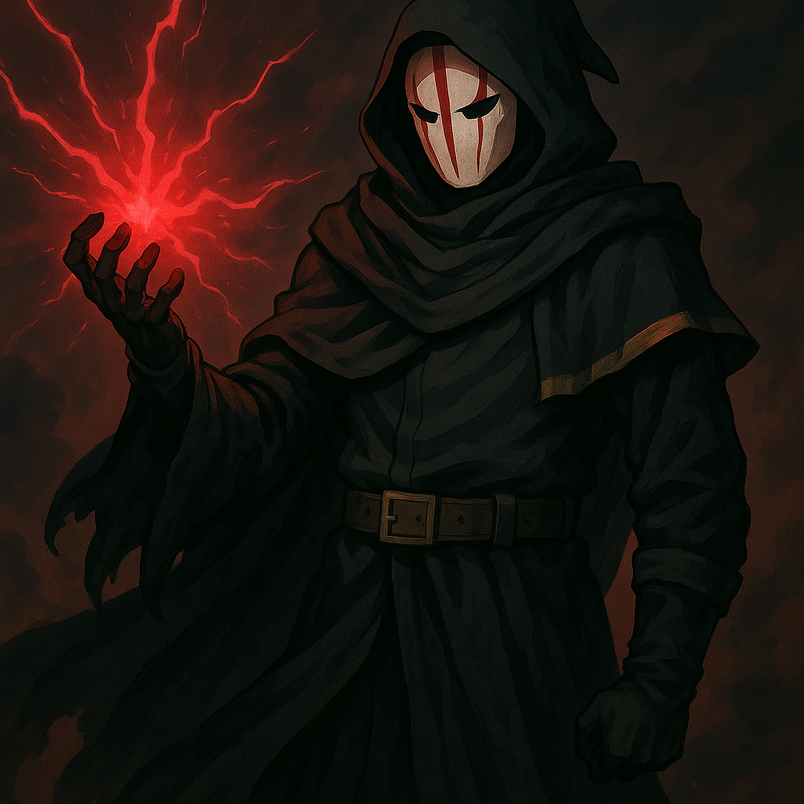

Daiko

Name & Alias: Daiko – The Darkflame Master
Age / Race / Role: Unknown (Appears mid-40s) / Myrthorian / Forbidden Energy Mentor, Flame Corruptor
Appearance: Imposing figure with dark red armor, flaming aura horns, and a smoldering hand sealed by black chains.
Affinities & Energy Types: Dark Flame, Forbidden Energy
Threat Tier: SS-Rank
Core Stats (0–10):
• Power: 10
• Speed: 6
• Technique: 10
• Intelligence: 9
• Defense: 9
• Aura Control: 10
Signature Abilities:
• Abyssal Blaze Surge
• Chainfire Entombment
• Forbidden Flame Seal
• Wrath Pyre Cataclysm
• Dark Embers Rebirth
Personality Summary: Cunning and manipulative. Sees students as tools, especially Sahil. Possesses unmatched control of corrupted flame.
Faction or Allegiances: Order of the Abyss